Taku 新手图文手册
展开章节目录
从打开第一个应用，到创建、自动化和分享
核对日期：2026 年 10 月 19 日｜实机：macOS、Taku 3.1.123、中文界面｜21 张实机截图
这份手册结合 Taku 官网、官方更新记录、官方 X、Publisher / Sites 官方文档，以及这台电脑上的实际界面整理。截图中的账号、额度、已安装应用和任务记录属于本机示例，不代表新账号默认状态。
先说清楚：Taku 把 AI 对话、可运行的小应用、可复用 Skill、外部工具和任务管理放进一个桌面工作区。 你可以直接让 AI 做事，也可以打开现成应用；需要长期使用的工具，可以做成 App；想发网址给别人使用，可以走 Site。
我已经实际打开一个免费本地应用，并验证了筛选交互；检查了创建入口、任务管理、自动化表单和设置。创建新 App、连接外部账号、发布 Skill / App / Site、付费模型调用，这次没有完整执行。相应章节会明确写“官方流程”或“入口已核对”，避免把说明当成成功实测。
完全没接触过 Taku？先读第 0 节（是什么、电脑能不能装），再读第 16 节（费用）。 第 20 节是常见问题。
你现在最适合的顺序：第 2 节打开一个现成 App → 第 4 节理解 @ 菜单 → 第 6 节做一个简单工具 → 第 11、12 节再看迁移与发布。 新词雷达放在第 13 节，先分清运行工具和分享网站这两件事。
0. 开始之前：Taku 是什么、适合谁
0.1 一句话理解
Taku 官网的口号是 “Borrow brilliance, make it yours”，意思是：借用别人已经跑通的 AI 做法，再改成你自己的。 它把 AI 应用、Agent、Skill 和工作流做成桌面上点开就能用的工具，不需要你去 GitHub 拉代码、装依赖或配 API Key。
官网把使用过程分成四步：
| 动作 | 意思 | 本手册对应章节 |
|---|---|---|
| Find 发现 | 在社区 / Marketplace 找现成作品 | 第 2 节 |
| Run 运行 | 安装后直接打开使用 | 第 2、5 节 |
| Remix 改造 | 在现成作品上改，或用一句话让 Agent 做新的 | 第 5、6 节 |
| Publish 发布 | 把自己的 App、Skill 或网站分享给别人 | 第 11、12、18 节 |
官网首页自报的规模是：每月约 120 万次运行、12,000+ 个应用与技能、3,400+ 位创作者。这些是官方宣传数字，不是第三方统计。
0.2 它和你用过的 AI 工具有什么不同
| 你熟悉的工具 | 主要用途 | Taku 的区别 |
|---|---|---|
| ChatGPT、Claude 等聊天客户端 | 一问一答 | 把一次做成功的方法保存成能反复打开的 App 或 Skill |
| Cursor、Codex、Claude Code | 写代码 | Taku 面向不写代码的人；已有的项目可以通过 Publisher 带进来 |
| n8n、Zapier | 连接各种服务，搭自动流程 | Taku 用自然语言让 Agent 组装，产物通常是有界面的 App |
| LM Studio、Ollama | 在本机跑模型 | Taku 需要联网，不能离线；数据绝对不能离开电脑时，选本地方案 |
Taku 官方博客也把自己归为 “工作区” 类应用：重点是把做出来的东西留下来、反复用，而不是单次聊天。
0.3 电脑要求
- macOS（Apple Silicon，即 M 系列芯片）：正式提供下载，产品整体仍处于 Beta 阶段。
- Windows：下载页标注为 “Experimental — unsigned preview”，即实验性、未签名的预览版；安装时系统可能弹出安全提示，界面和稳定性也可能与 Mac 不同。
- Intel 芯片的 Mac、Linux：官方博客明确写了没有安装包。
- 网络：必须联网，不能离线使用。3.1.123 起，客户端的服务请求会遵循系统代理或 PAC 设置。
- 下载：下载页需要先通过人机验证。
0.4 适合谁、不太适合谁
适合：
- 想直接用现成 AI 工具、不想配环境的人。
- 经常重复做同一类 AI 任务，想把做法固定下来的人。
- 已经在 Codex / Claude Code / Cursor 里做过小工具，想分享给别人用的人。
不太适合：
- 只有 Intel Mac 或 Linux 电脑的人。
- 数据必须完全留在本机、不能经过任何云端服务的人。
- 需要稳定的生产级服务、不能接受 Beta 变动的人。
- 希望靠发布作品获得稳定收入的人。当前市场还很早期，见第 18 节。
0.5 别搜错：同名产品
搜索 “Taku” 会混进别的产品。taku.cool 是一个网站弹窗和营销工具，AppSumo 上的大量 Taku 评价说的是它；GitHub 上的 LIJUMN/taku 是一个手机自动化的个人项目。本手册说的是 taku.ai、官方 X 账号 @TheTakuAI 和 GitHub 组织 Taku-OS。
0.6 产品阶段
Taku 于 2026 年 8 月 18 日在 Product Hunt 上线，当天排名第 2。创始人在 Product Hunt 上的自我介绍提到，团队成员来自多家前沿 AI 实验室；这是本人陈述，本手册没有独立核实。
对新手来说，更重要的是：它更新很快。 2026 年 9—10 月，官方更新记录里就有 16 个版本（见第 19 节）。看到界面和截图不一样时，先核对版本号。
1. 先分清这些名字
不用先学全部术语。你只需要根据“我最后想得到什么”选择入口。
| 名称 | 你可以拿它做什么 | 从哪里开始 | 得到什么 |
|---|---|---|---|
| 对话 / Agent | 研究问题、整理文件、调用工具、编写或修改项目 | 桌面底部输入框 | 本次任务的回答、文件或应用 |
| App | 使用一个有界面、可以反复打开的小工具 | 社区 / 应用库；创建时选 @app |
在 Taku 桌面里运行的应用 |
| Skill | 让 AI 按一套固定方法处理某类任务 | 输入框 @ → 技能 |
可复用的指令、脚本和参考资料 |
| API | 为任务选择搜索、模型等具体能力 | 输入框 @ → API |
Agent 可调用的一项服务 |
| 集成 | 连接 GitHub、Notion 等外部账号服务 | 设置 → 集成；对话中引用 | 经过授权的外部工具能力 |
| 自动化 | 让一条明确的任务按时间触发 | 任务管理 → View → 自动化 | 一条计划任务及其运行记录 |
| Site | 把一个产品变成能发链接的网页 | @site 或外部 Agent 的 taku-sites |
你选的名字.taku.site |
| Publisher | 把已有项目评估、整理并带入 Taku 发布流程 | Codex / Claude Code 等宿主中的插件 | Skill 发布包，或 App 迁移候选等 |
| Widget | 把日历、计划、应用等放在桌面上随时查看 | 桌面组件入口 | 桌面上的小块界面 |
| Helper | 可选的主动辅助、屏幕观察和定期检查 | 设置 → Helper | 按你选择的范围主动提供帮助 |
App、Skill、Site 不是同一个东西。 一个“新词雷达”可以同时有三种形态：Skill 规定怎么找词和核验；App 负责你自己的操作界面和结果管理；Site 给其他人通过浏览器使用。是否需要三种都做，要看实际用途。
官网和官方 X 还使用 Stack / Stax 来描述组合与分享工作流；现在的 stax 页面 也承担 Sites / Publisher 入口。先按页面里的具体产物判断，不必把所有名称理解成一种固定文件格式。官方 Stack 说明
2. 第一次使用：先把一个现成 App 跑起来
本节的打开与筛选已实测；安装步骤依据当前社区入口。 这是最快理解 Taku 的办法，通常不需要先配置插件或模型 API Key。
2.1 下载、登录和认识桌面
- 进入 官网下载页，选适合自己系统的版本。本手册使用 macOS；Windows 页面当前标注实验性质，界面和稳定性可能不同。
- 用自己的账号完成登录；如果出现首次引导，按引导完成即可。本次没有重新注册账号，因此没有伪造首次注册截图。
- 打开右上角头像 → 设置 → 常规，确认版本。本文截图来自 3.1.123；版本不同，个别入口可能变化。
- 回到桌面，先认三个地方：底部对话框、右侧应用栏、右上角额度 / 通知 / 头像。
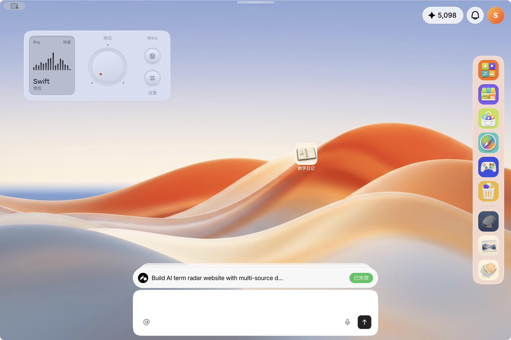
2.2 找、装、开、用
- 点击右侧应用栏的 社区。也可以先在浏览器看 Marketplace，实际安装 / 使用按客户端提示继续。
- 在 Discover、分类或搜索中找一个感兴趣的应用。第一次可以选功能直观的免费工具。
- 点标题或卡片进入详情，先看介绍、创作者、运行方式和价格。
Get是获取入口，别把它当成只看详情。 - 未安装的作品按
Get和客户端提示安装；已经装过的会显示 打开。 - 打开后执行一个简单操作。不要只以“窗口出现了”判断成功，要看到结果跟着输入变化。
- 关掉窗口后，到 应用库 找到它再打开，确认你知道下次从哪里进入。
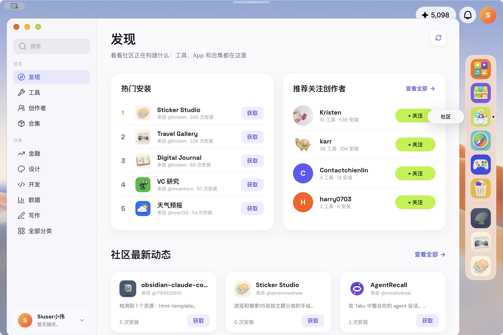
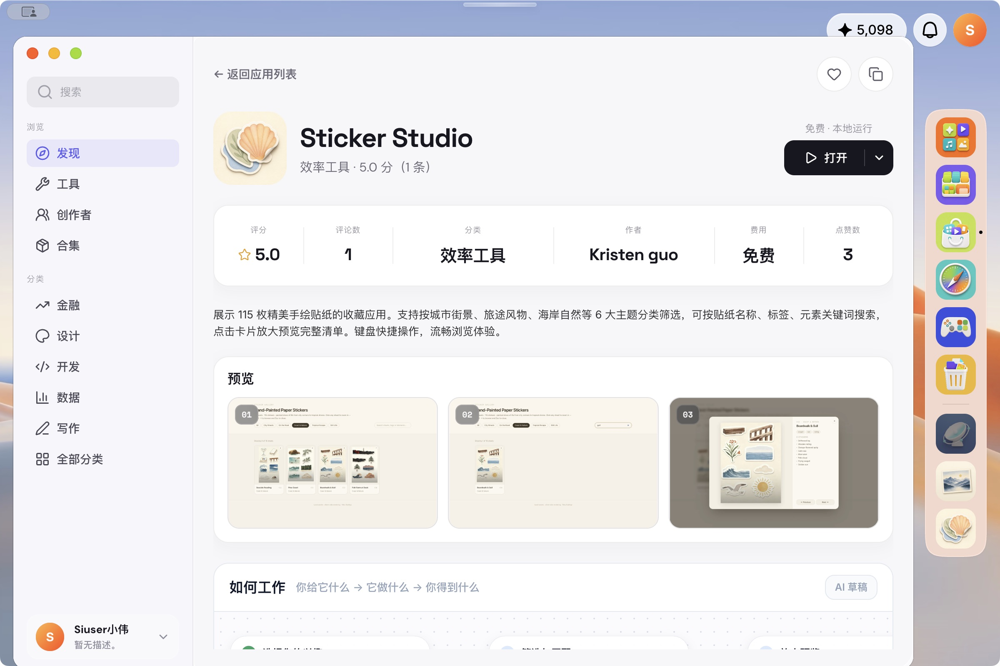
我实际验证的例子： 打开 Sticker Studio，选择 Coast & Nature 分类，列表变成 4 / 18 sheets。说明它是一个能操作、会更新结果的应用。你可以用同样方法验证自己的第一个 App；如果这个作品不再可用，就换一个简单的免费工具。
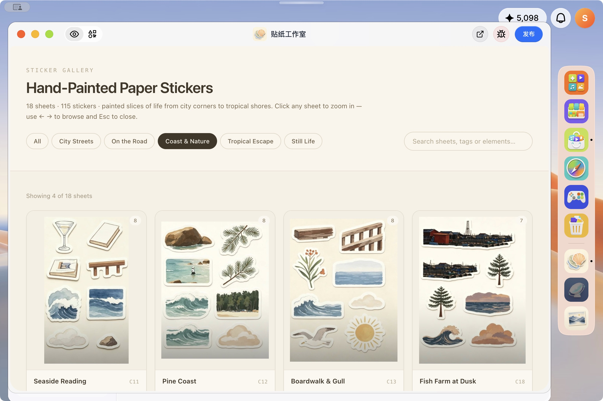
完成标志： 你能从应用库重新打开一个 App，并让它完成一次有结果的操作。如果卡片可以打开、App 却空白或报错，先看第 14 节，不要连续重复安装。
3. 直接对话：把任务说到可以验收
对话适合先试一次需求。建议把输入写成四项：目标、材料、输出、限制。如果只说“做个雷达”，AI 还得猜数据源、时间范围、去重和输出形式。
可以先试这种有明确结果的小任务：
帮我整理最近 24 小时值得内容创作者关注的 AI 新产品。
最多 5 项，每项包含：名称、发生了什么、对谁有用、原始来源链接。
优先官方发布，区分事件发生时间和文章发布时间。
找不到可靠来源就标记待核实，不要补写；先在对话里给结果。
这段提示词是使用示例，本次没有提交执行。 搜索是否可用、结果质量和消耗，取决于实际工具、网络与账号额度。第一次先验收 3—5 条，比马上要求建一个完整系统更容易定位问题。
想处理本地材料时，可以在 @ → 文件 选择明确的文件，或使用客户端提供的附件入口。需要读取目录、运行脚本或调用外部账号时，先看它请求的具体范围。对话框允许你描述这些任务，不代表每项依赖已经配置好。
快速启动器：不用切回桌面也能提问
3.1.113 起，可以在设置里为 快速启动器 设一个快捷键。在任何界面按下快捷键，就能搜索、启动 App，或直接提问；回答到一半可以停止，也可以转回主对话继续。习惯后，这是最快的入口。官方版本说明
Planner、Builder、Nitro 怎么理解
Planner 可以理解为任务的规划与协调阶段；Builder 负责实现和构建。Nitro 是官方用于长任务的工作模式名称。它们并不是三种固定模型，也不能当成成功率或无限额度承诺。官方版本说明
普通使用先选清楚目标和材料。执行强度、模型和复杂项目调试放到第 9 节；任务没有完成时，去任务管理看原因，不要只盯着最后一句回复。
4. 输入框里的 @：给 AI 指定资源
入口已实机核对。 点击输入框旁的 @ 图标，会看到全部、新建、应用、技能、API、集成、文件等分类。它的价值是明确告诉 Agent 这次使用哪个资源。
4.1 新建：App 还是 Site
点击 新建 或对应的介绍入口，当前界面会解释两种产物：
| 你的目标 | 选择 |
|---|---|
| 做一个自己在 Taku 桌面反复打开的工具 | Taku App / @app |
| 发一个网址，让别人用浏览器访问 | Taku Site / @site |
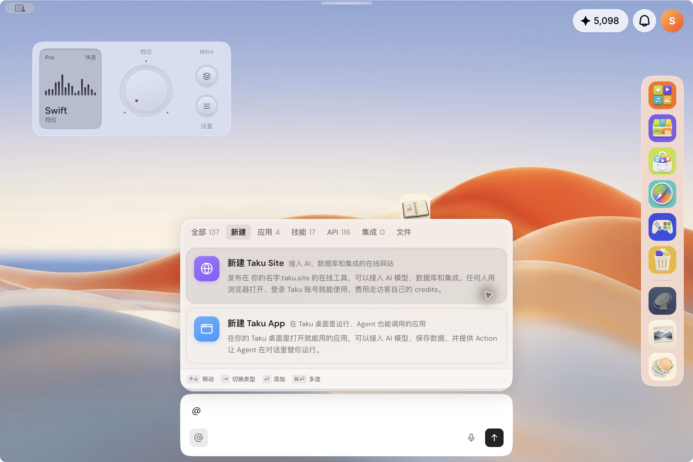
4.2 技能：指定工作方法
点 技能，搜索并选择已安装的 Skill，再说明本次任务。比如同样叫“研究”，一个 Skill 可能强调官方来源，另一个可能做跨平台收集；选对工作方法比只改模型更直接。
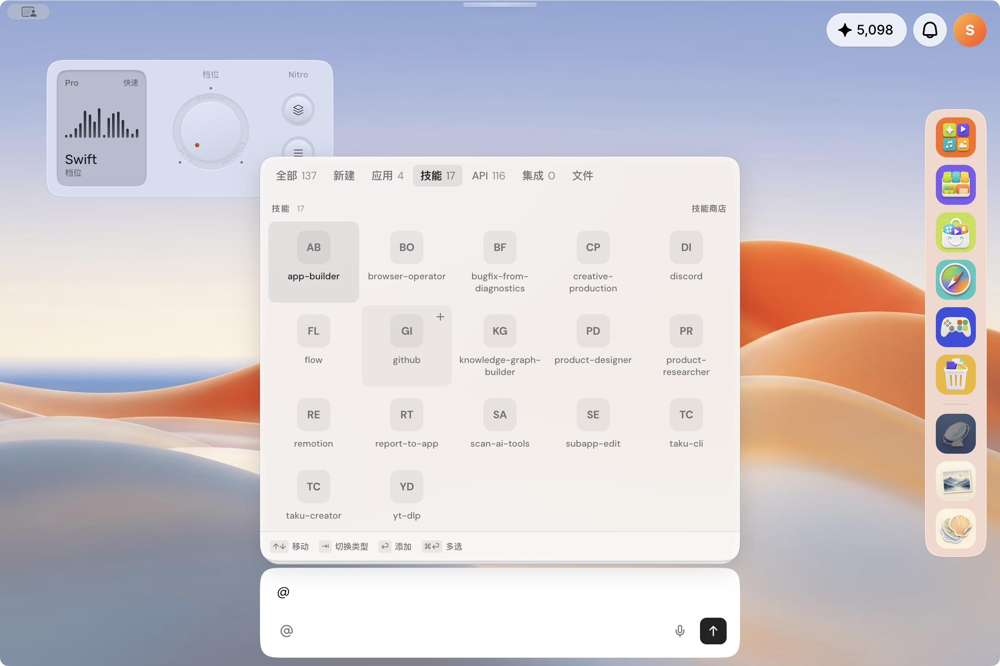
4.3 API：指定服务能力
点 API 后搜索具体服务。本机搜索 SerpAPI 能出现相应结果，可将它加入对话。
使用我选中的搜索 API，找出这个产品的官网、正式发布说明和定价页。
先返回链接及核对结果，遇到登录或额度问题直接说明。
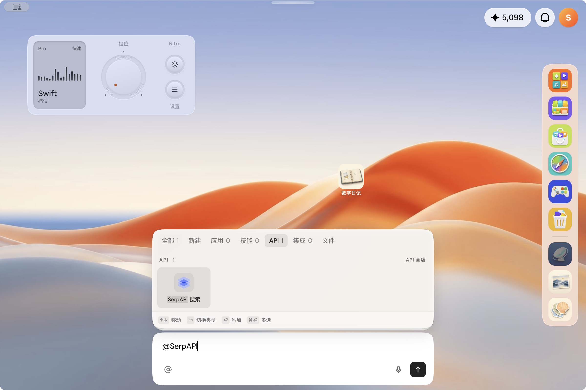
4.4 应用：让 Agent 知道你指的是哪个 App
可以从 @ → 应用 选择已有 App；也可以进入应用详情，打开更多菜单 → 在 Agent 中引用。界面解释为：把应用加入对话，让 Agent 调用它。
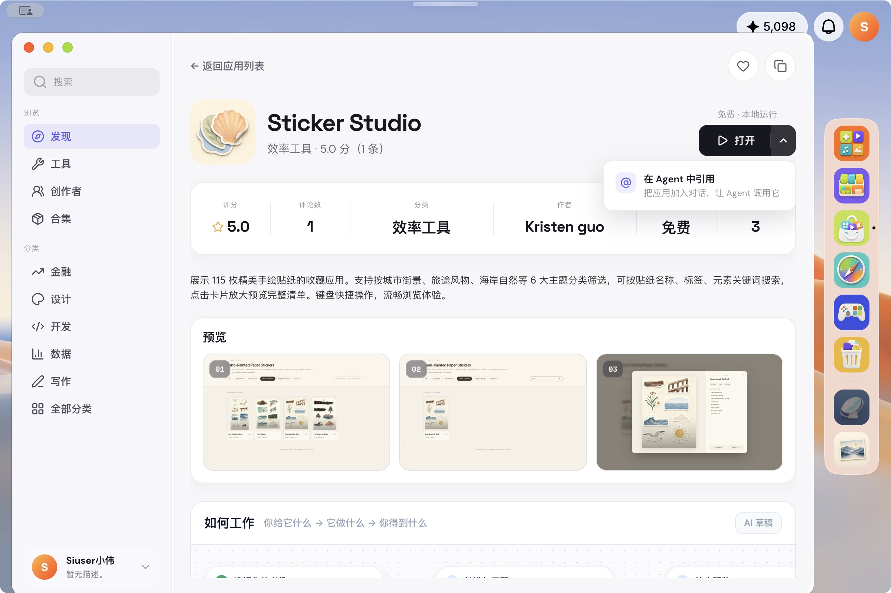
例如你可以说：“我指的是这个 App。先解释现有功能，再告诉我能否增加中文分类。”这比从零重新描述、意外生成另一个同名 App 更容易保持上下文。
5. 使用、修改和管理已有 App
5.1 修改前先决定改哪一份
社区作品的“免费”不自动代表你获得任意复制、改编和商用的权利。需要 Remix 或发布自己的版本时，先看具体作品许可。Marketplace 许可说明
对自己有权修改的 App，先引用它，再描述一个小改动。例如：
基于我引用的这个 App，把分类名称改成中文。
保留现有功能和用户数据。先说明将修改哪一份应用，再执行并验证。
完成后重新打开更新后的应用，让我检查分类筛选是否仍然正常。
这是建议提示词，未在本次执行。 遇到“修改现有版本”与“生成副本”的选择，按你想保留原作还是直接维护自己的应用决定。
5.2 Design Mode 是什么
App 窗口中可以看到预览 / 设计模式入口。设计模式用于调整文字、颜色和布局。首次进入时，当前版本明确提示需要准备时间。
设计修改可以这样表达：“选中这个标题，把文字改成‘今日新词’，字号加大一级，其他区域保持原样。”涉及抓取逻辑、去重、数据库等功能变化，仍应清楚描述需求并验证，不能只靠看起来改好了。
5.3 应用出错、版本和窗口
App 窗口还有 修复这个应用、独立窗口、发布 等入口。出现错误时，先保留原错误信息；使用修复入口前看清将附带的诊断信息，再让 Agent 针对问题处理。
修复时会发送什么： 3.1.113 起，“修复这个应用” 默认附带运行日志和 App 信息，诊断截图只保存在本地。3.1.123 起，编辑 App 时会显示实现结构图，可以只让 Agent 修复其中某一部分，不用整个重做。官方版本说明
在应用库里，对已有 App 打开右键菜单，可以看到打开、固定、重命名、移动、回滚等管理操作。回滚入口存在不等于所有 App 都有可恢复历史，要看实际可选版本。先验收新版本，再清理旧数据。
6. 第一个自己做的 App：选题整理器
以下为创建入口结合官方流程编写的操作练习，本次没有生成这个 App。 先做一个不依赖搜索、模型 API 和外部账号的小工具，能更快判断你是否理解了创作流程。
- 回到 Taku 桌面，点
@ → 新建 → Taku App，或使用界面提供的@app快捷入口。 - 粘贴下面的需求。发送前确认当前选择的是 App。
- 看 Agent 的计划。如果它提出了额外账号、搜索或付费服务，说明你的需求不需要这些，先完成最小版本。
- 等待构建、验证并打开产物；到应用库确认能找到它。
- 按后面的验收动作试一次，再提出改动。
做一个 Taku App，叫“选题整理器”，供我自己在桌面使用。
功能：
1. 粘贴多行选题，一行一条，最多 100 条。
2. 去掉首尾空格、空行和完全相同的重复项。
3. 展示整理前后数量，并逐条列出结果。
4. 能一键复制整理后的文字、清空输入。
5. 这一版只在当前页面处理文字，不调用模型、不联网、不接外部账号。
中文界面，按钮清楚。完成后打开应用，验证去重、数量和复制功能。
验收输入：
AI 新词雷达
选题整理器
AI 新词雷达
Taku 入门
你应该看到： 去掉空行、首尾空格和重复项后剩下 3 条；复制出的文字与列表一致；清空后输入和统计一起重置。这个验收来自我们定义的需求，尚未在 Taku 中跑过，不应预先宣布通过。
如果失败，回到同一任务贴出具体差异，比如“输入 4 行含重复时仍显示 4 条，预期是 3 条”，比“你再优化一下”更容易得到有效修复。成功之后，再逐项增加收藏、持久化、AI 评分等能力。
6.1 再做几个练习：从不用 AI 到用 AI
做通 “选题整理器” 以后，可以按难度继续练。下面的提示词都可以直接复制，发送前确认选的是 Taku App。这些练习本次没有在 Taku 中执行，消耗多少以实际为准。
练习 2：读书摘录卡片（只在本地处理，不调用 AI）
做一个 Taku App，叫“摘录卡片”。
我粘贴一段书摘，填写书名和页码，保存成一张卡片。
卡片列表按书名分组，可以搜索关键词、删除单张卡片。
关闭再打开后，卡片还在。不调用模型、不联网。
完成后打开应用，保存两张卡片，再关闭重开，确认卡片还在。
验收：关闭再打开 App 后，卡片还在，说明保存功能生效。
练习 3：封面图生成器（使用 Taku 内置的图像 AI，会消耗 credits）
3.1.102 起，Taku App 可以直接使用 Taku 的 AI 生成图片和视频，不需要自备 API Key。
做一个 Taku App，叫“封面图生成器”。
输入一句文章标题，选择风格（简约、插画、摄影），生成 1 张 16:9 的封面图。
生成前显示预计消耗，生成中可以取消，结果可以下载。
先只做单张生成，不做批量。完成后用一个标题测试一次。
验收：可以取消；取消后不会重复扣费；结果能下载。生成前先看清预计消耗。
练习 4：周报整理（调用文本模型）
做一个 Taku App，叫“周报整理”。
我把这周零散的工作记录粘贴进去，它整理成：本周完成、进行中、遇到的问题、下周计划四部分。
不编造我没写的内容，没写到的部分标注“无”。
可以一键复制结果。完成后用我给的示例记录测试一次。
验收：用一段故意漏掉 “问题” 的记录测试，对应部分应该显示 “无”，而不是编出内容。
7. 任务管理：知道工作卡在哪里
入口与现有任务状态已实机核对。 点击右侧 任务管理，再点 View，可以切换全部、最近、产物、自动化。Workspace 则帮助你在工作空间之间组织任务；桌面还提供新建、重命名和归档入口。
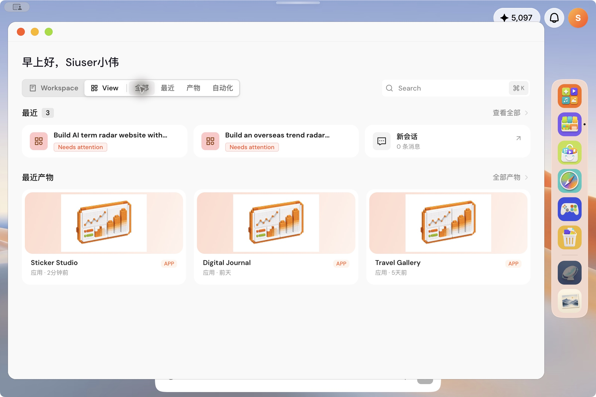
遇到任务迟迟没结果：
- 先打开原任务，看它是在等待你、执行中，还是已经失败。
- 有明确错误就保存错误原文，核对网络、权限、依赖或额度。
- 已有产物时，先尝试打开产物，确认它究竟完成了多少。
- 在原任务继续修复；只有确定要另做一个项目时才重新开始。
“回答完了”“构建通过”“应用能用”“网站上线”是不同状态。 做 App 要看到真实功能通过；做 Site 要看到平台确认可用，并打开实际网址检查。
8. 自动化：每天定时做一件明确的事
已检查表单、触发器和通知选项，并填写一个演示；没有保存或执行计划。 本节不承诺电脑休眠、关机或退出 Taku 后仍可执行。
8.1 从哪里创建
- 点击右侧 任务管理。
- 点击 View → 自动化。
- 选择 新建自动化。
- 填名称、触发器、指令、模型和通知。
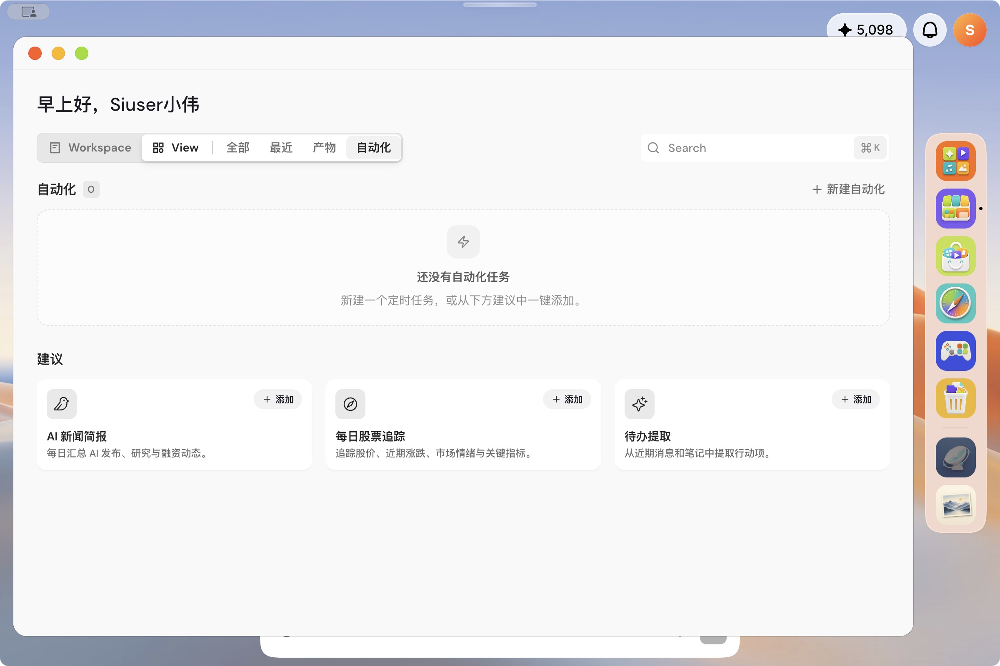
触发器当前包括一次、每天、工作日、每周、每月、每年，以及自定义 5 字段 Cron。新手用“每天 + 时间”就够了。若机器或账号跨时区，创建后核对界面显示的下次执行时间；本次没有验证时区切换规则。
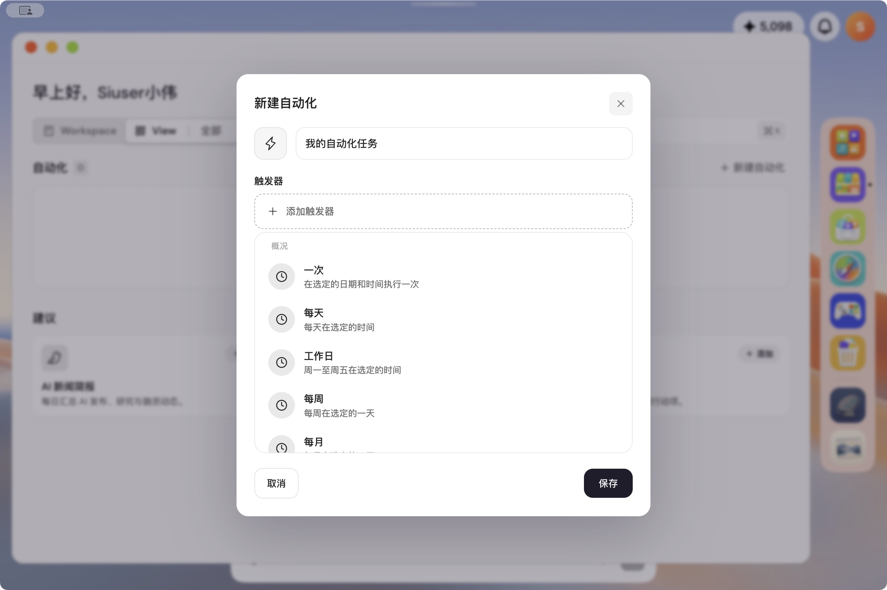
8.2 一个可以照填的例子
名称：每日 AI 新词简报。触发器：每天，上午 9:00。
整理过去 24 小时海外 AI 新模型、新产品和新工具，最多 5 项。
每项给出名称、发生了什么、原始来源链接；无法核实就标记待核实。
只在 Taku 中显示结果，不发送到外部平台。
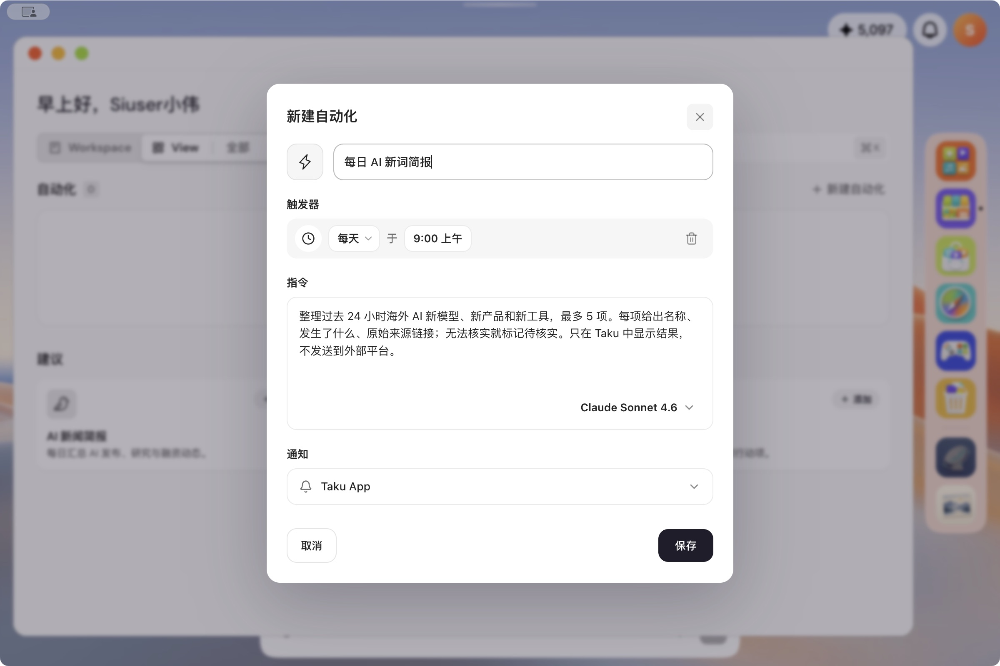
你自己使用时，先把同样的任务在普通对话里跑通一次，再保存自动化。保存后回列表确认计划存在、周期正确；首次执行后核对运行记录与结果。如果列表提供暂停 / 编辑入口，可在不需要时停用；按当前界面操作，不要重复创建同名计划。
当前表单的通知选项是 Taku App / 关闭。Bark、ntfy、Telegram 在设置中另配；不要把任务表单理解成已经接通飞书、微信或所有外部渠道。
8.3 关窗口、退出和后台运行
常规设置中，关闭窗口时有隐藏到顶部栏、每次询问、退出应用等选项。本机选的是隐藏到顶部栏。关窗口与退出进程不同；第一次验证本地计划时，先保持 Taku 运行并核对记录。其他执行环境的计划是否可在退出后继续，要按具体任务确认。
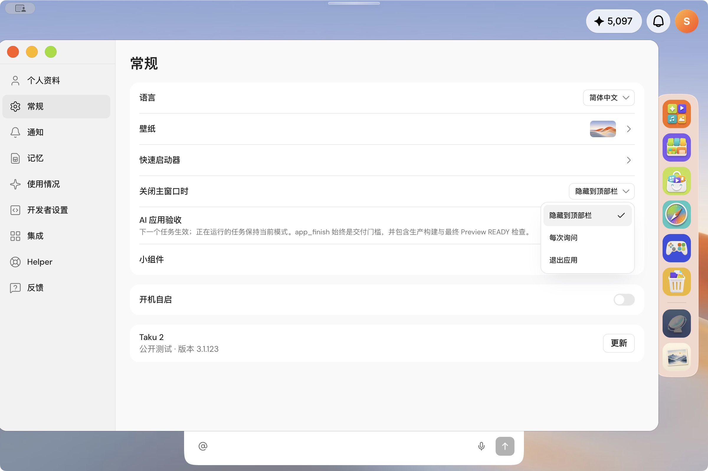
9. 设置：新手先看哪几页
入口：右上角头像 → 设置。建议先看常规、使用情况和通知，再按需求看开发者设置 / 集成 / Helper。
9.1 常规、账号与额度
常规里能看到语言、桌面背景、快捷启动器、窗口关闭行为、组件、启动与版本更新等。个人资料还提供套餐、邀请码、活动中心等入口。具体优惠按当前账号和结账页核对。
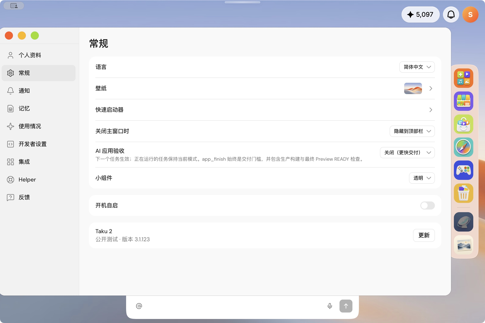
费用要分开看： 订阅 / 账号额度、作品获取价格、实际模型或第三方调用费用，可能不是同一笔。一个免费本地工具可以只处理本地输入；另一个免费安装的 AI 工具，使用时仍可能消耗模型额度。执行前看页面报价或确认提示，执行后看使用情况。
各套餐的价格、credits 数量和省额度的方法，见第 16 节。
本手册不把旧活动帖或网页静态摘要当成当前报价。购买前以 官方 Pricing 与本人账号展示的实际周期、额度和费用为准。
9.2 Planner 模型与 AI 工作引擎
开发者设置里有 Planner 模型、AI 工作引擎、本地模型、浏览器扩展、Harness Inspector 等入口。
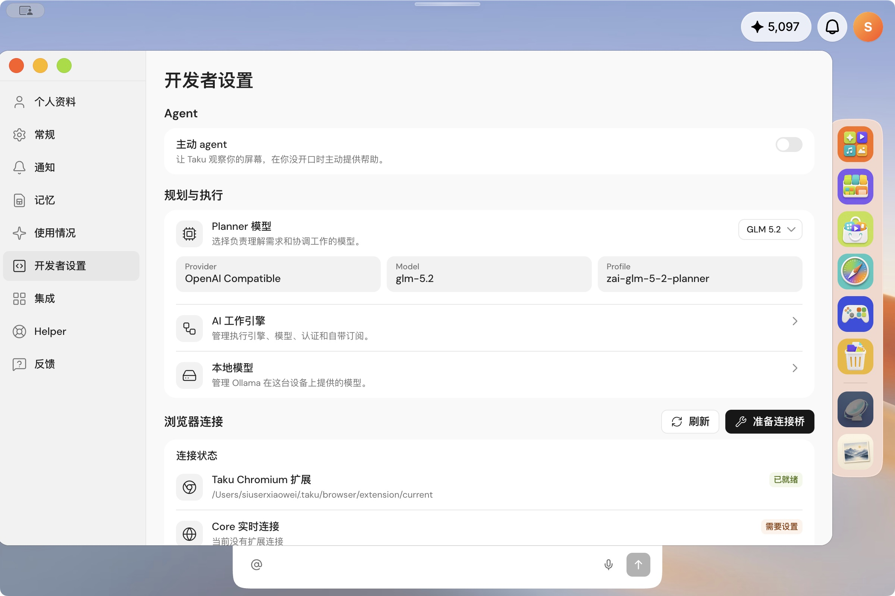
AI 工作引擎页面显示 L1、L2、L3 不同执行强度，以及套餐对应的并发限制。它描述执行投入；模型和运行环境由系统匹配，不能直接理解为三款固定模型。界面还说明更改影响后续启动的 Agent。
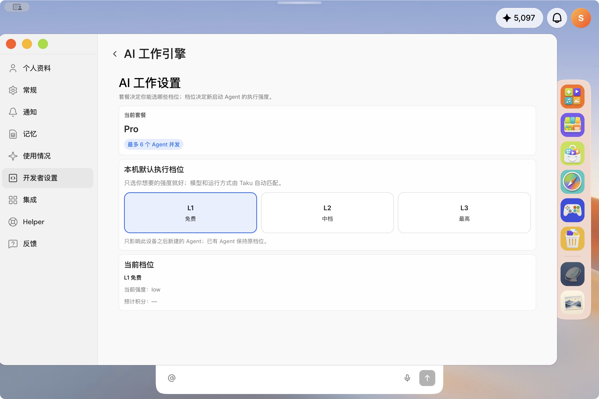
本地模型入口管理这台设备上的 Ollama 模型。它不表示你已经下载模型，也不表示所有任务、搜索和远程集成都能离线。确实需要本地模型时，再安装相应环境并验证一个小请求。
9.3 通知和手机推送
通知页可查看最近 30 天的通知，按分类、状态搜索。需要批准或处理的动作，按界面提示回通知面板操作，历史列表主要用于查看。
手机推送支持 Bark（iOS）、ntfy（Android）、Telegram。当前界面明确说明：由这台电脑直接发送，只在 Taku 运行时有效；通知标题和正文会发送到你选择的服务器。
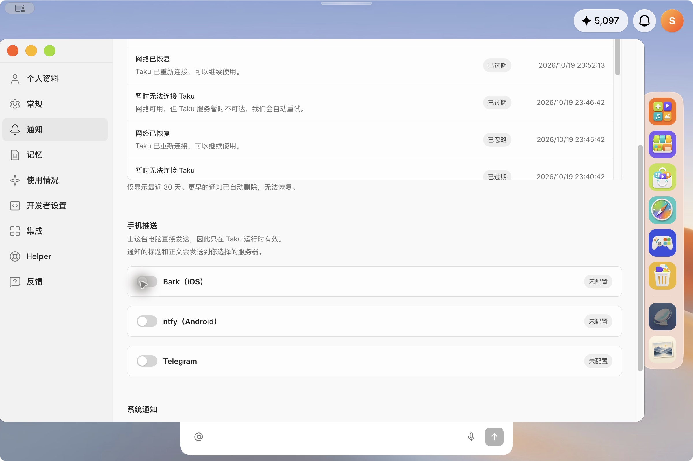
要配置时，选择你已有的服务，在客户端的受保护配置栏填写相应信息，再按界面测试。不要把真实推送密钥贴进公开应用、教程或发布包。具体收件端安装步骤按 Bark、ntfy 或 Telegram 官方说明核对。
9.4 “记忆”页面：这里实际是存储管理
这个名称容易误导。本机当前“设置 → 记忆”展示的是存储占用、App 数据和 Workspace 归档等管理内容。 没看到可直接编辑“我的长期偏好”的表单，不能把它写成一个已经验证的个人知识库管理器。官方隐私说明另外讨论了 Agent Memory；这个设置页不代表后台记忆能力的全部范围。官方说明
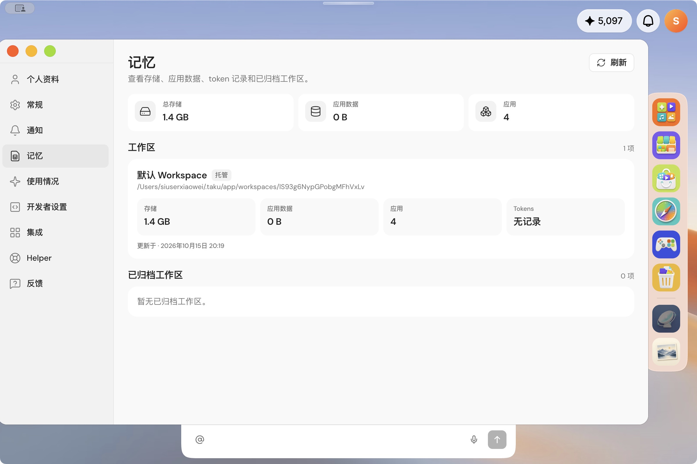
10. 集成、浏览器、Helper 和桌面组件
10.1 连接外部账号：目录多不等于全部已接通
打开 设置 → 集成。本次看到 Composio 目录，包括 GitHub、Gmail、Notion、Google Drive、Sheets、Figma、Linear、Slack 等，也有不少条目标记受限。
- 先找你真正需要的服务，查看条目是否可以添加。
- 按“添加”进入该服务的官方授权流程，确认账号和权限范围。
- 回到 Taku 确认连接状态，再在对话中选择 / 引用它。
- 先用一个读取任务测试，例如“列出我指定文档的标题”。
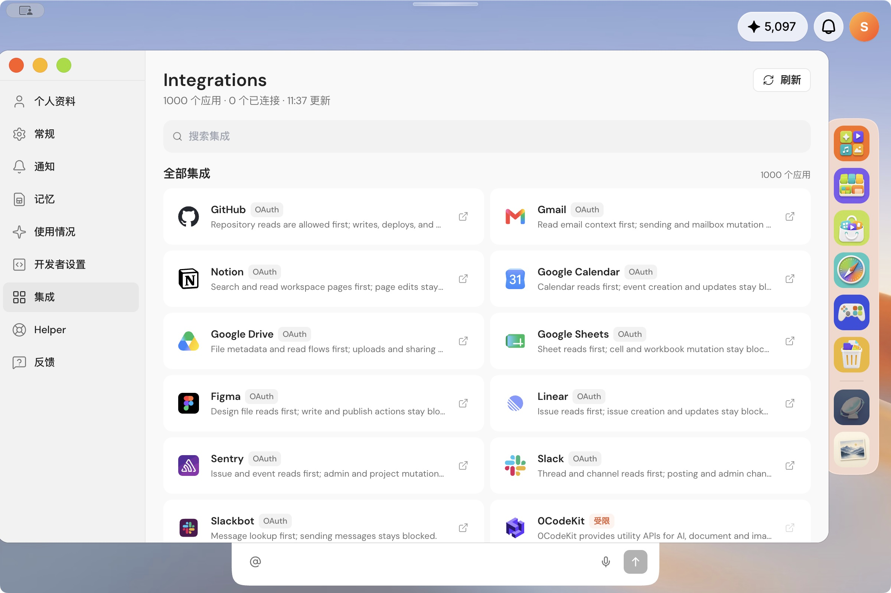
如果要发送邮件、发消息或修改外部记录，先确认这个连接器实际开放了该动作，以及你这次要操作的对象。服务出现在目录里、OAuth 成功、某个写入动作可用，是三个不同检查点。
10.2 浏览器桥接：需要额外连接
右侧有浏览器入口；另外，开发者设置还提供 Chromium 浏览器扩展 / Bridge 的准备和扩展目录入口。它们不是“已经自动接管你所有浏览器标签页”。
需要连接时，先在 Taku 准备扩展文件，再按页面说明在兼容浏览器的扩展管理页加载并连接；实际使用还要批准具体标签页。本机显示已准备扩展文件但未连接，没有继续加载或授权。释放标签页或撤回扩展授权可以结束对应访问。官方隐私说明
10.3 Helper：按需要开启的主动辅助
设置 → Helper 提供屏幕观察、可选定期检查、用量预算、推送上限、Dynamic Island，以及把建议升级为 Planner 任务等选项。本机当前关闭；本次没有打开屏幕观察或自动写入。
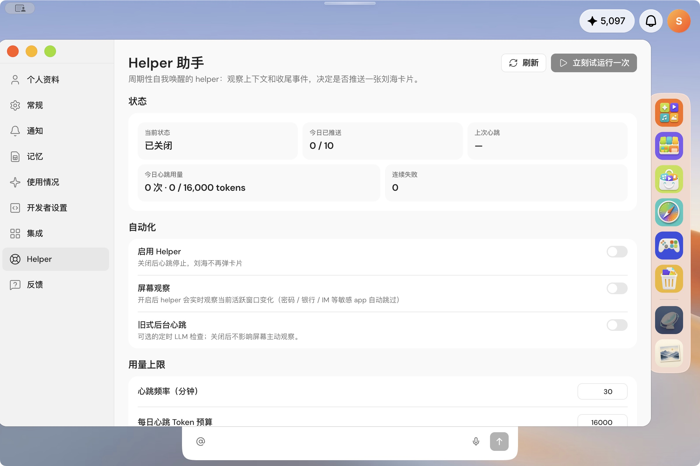
10.4 Widget、小游戏和其他辅助项
桌面组件菜单能看到我的应用、计划、日历、番茄钟、活动花园等项目。你可以按实际菜单添加常用信息；App 是否提供自己的 Widget，要看该应用能力。本次只检查了组件菜单，未逐个运行。
右侧还能看到小游戏中心。官方 X 也发布过桌面伴侣实验和小游戏相关内容；它们属于辅助体验。不要把未来奖励预告当成已可兑现的收益，也不用为了做工具先参与活动。小游戏相关官方帖、桌面伴侣实验
11. 你已经在 Codex / Claude 做了项目：Publisher 怎么用
本节依据官方 0.4.0 插件和发布文档；安装命令已核对，本次未重新安装、上传或发布。 只用 Taku 桌面创建 App 时，不需要先装这个插件。
11.1 安装到熟悉的 AI 工具
官方组合插件叫 taku-publisher，包含 Publisher 和 Sites 两项 Skill。先确认有 Node.js 20 或更新版本：
node --version
Codex：
codex plugin marketplace add Taku-OS/taku-publisher --ref marketplace
codex plugin add taku-publisher@taku
Claude Code：
claude plugin marketplace add Taku-OS/taku-publisher@marketplace
claude plugin install taku-publisher@taku
装好后新开一个聊天 / Agent 会话，让宿主发现两项 Skill。如果命令与当前宿主不兼容，先查宿主版本和 官方安装说明，不要靠反复覆盖文件解决。
Cursor / 标准 Agent Skills 的固定版本安装器，按宿主选一条：
# Cursor
npx --yes --package https://github.com/Taku-OS/taku-publisher/releases/download/v0.4.0/taku-publisher-0.4.0.tgz taku-publisher install --host cursor --update
# 标准 Agent Skills 目录
npx --yes --package https://github.com/Taku-OS/taku-publisher/releases/download/v0.4.0/taku-publisher-0.4.0.tgz taku-publisher install --host agent-skills --update
0.4.0 是本次核对的正式组合发行包；使用明确版本，避免旧的 latest 别名把你带到不同包。官方发行页
11.2 不要一上来就“全部迁移并发布”
先让插件评估你的现有项目：
使用 Taku Publisher，只读评估我指定的项目目录。
先告诉我核心功能、运行依赖、适合 Skill / Taku App / Site 的部分，
以及哪些功能需要改造。不要运行、修改、上传或发布。
我会在下一条提供准确项目路径。
不知道项目在哪时，也可以让 Publisher 列出最近在 Codex / Claude Code / Cursor 做过的候选，先选一个再评估。已知路径则直接提供绝对路径，更容易避免选错版本。
它可能建议已有 Skill、生成 Skill、App 迁移，或仅作参考。扫描结果只是候选路线，要看真实代码与依赖。 不能看到 Python 就宣布整个 Taku 无法运行，也不能看到一个网页就宣布可以不改直接上线。
需要登录时，在返回的官方浏览器页面完成，再回原聊天说“继续”。Token、验证码和回调信息不需要粘贴进聊天；注册条款和最终分发许可由本人在官方页面处理。
11.3 发布 Skill 的操作顺序
你可以这样要求：
使用 Taku Publisher，把我选定的 Skill 准备成可发布版本。
保留原项目，在独立候选目录检查依赖、配置、权限和许可证，
完成安全审阅和打包，准备官方最终审阅页。公开提交前让我检查。
后续一般是：明确来源 → 准备文件 → 安全检查与打包 → 私有上传草稿 → 官方页面最终审阅 → 提交 → 查询远端状态。只有“打包成功”还不能说已上架；草稿、审核中、已发布要区分。Publisher 官方 Skill
发布包里写清需要哪些配置、为什么需要；实际密钥留在受保护配置中。安装者仍可能需要自己的账号、环境和额度，不能把“可以安装”写成“无需任何条件就能跑”。
11.4 App 的桌面发布与外部迁移
自己创建的 App 窗口有 发布 入口；官方版本记录也有 App 发布与价格配置能力。本次只核对了入口，没有进入最终提交，因此不编造后续每一步的表单名称。
外部项目迁移为 App 时，先做独立候选、适配、测试、构建和本地安装验收。Publisher CLI 注册的私有 App 草稿，不等于在桌面商店公开发布。这种外部迁移草稿如何衔接桌面公开发布，本次没有验证，以实际客户端支持为准。 可上架时，再按实际桌面 / 官方审阅流程核对名称、预览、许可、配置与价格，最后确认公开。
12. Site：让别人点一个网址就能用
本节依据官方 Sites 0.4.0 文档及只读能力查询，未部署新网站。 官方 X 已明确展示从 Taku、Codex、Claude Code 带入项目并通过网址试用的方向。2026-10-19 官方帖
12.1 两个入口
你可以在 Taku 中选 @site，也可以在装好插件的 Codex / Claude Code 中使用 taku-sites。后者对你已有本地项目更直接；不用把源码手动粘贴成一长段对话。
第一次建议做简单展示页，确认完整链路，再接复杂业务：
使用 taku-sites，做一个中文作品展示站。
包括首页、3 个项目卡片和关于我页面，先用我提供的公开文字。
先读取当前账号能力，在本地预览并验证页面和导航。
说明哪些测试使用模拟。现在不要发布；发布前让我填写并确认准确子域名。
12.2 从预览到发布
- 检查 Sites 登录、账号资格和当前能力目录。
- 在项目目录构建网站，按实际需求声明登录、存储和平台能力。
- 启动本地预览，检查页面、输入、输出和错误提示。
- 完成打包 / 契约验证，修复不兼容项。
- 你提供准确子域名，检查是否可用。
- 显示完整目标网址和本次构建摘要；你确认后再发布。
- 等平台返回 ready / 可用状态，打开真实网址再验收一次。
本地预览不等于线上可用。 本地的登录、计费或存储可能使用模拟；静态验证通过也不能证明访客授权、真实写入和扣费成功。CLI 没有一个通用 sites-preview 命令，预览由 Agent 使用项目开发服务器完成。Sites 官方流程、测试范围
12.3 现在可以确认的能力边界
| 你想做的事 | 本次核对结果 |
|---|---|
| 静态公开页面 | 可以作为 Site 的一种形态；不应一概说所有页面都必须登录 |
| 登录与个人数据 | 有相应登录 / 存储机制，需要正确声明与授权 |
| 平台数据库 | 提供 Sites 存储能力；实际数据读写本次未执行 |
| 搜索、图片、视频 | 本次实时目录看到 Airbnb、SerpAPI 搜索、图片编辑、图片生成、视频生成五类集成 |
| 桌面全部 API 搬到 Site | 不能保证；网站端要重新核对 Sites 实时目录 |
| 原样托管 Python 后端、任意爬虫、Cron | 当前 Sites 契约没有证明这条通用托管路线，需要另评估后端 / 调度架构 |
| 装好插件就有全部权限 | 不成立，资格、scope、容量和 credits 都由当前服务端状态决定 |
Sites 是有平台边界的网站运行环境。Sites 的技术限制不能外推到整个 Taku 桌面 Agent。 本次也检查了本机已安装程序的工具注册和技能导入逻辑：桌面 Agent 有文件与 shell 工具，可以通过本机环境调用脚本；这不证明自带完整 Python 环境或所有依赖。网站发布则要看网站契约是否支持这条数据链路。
API、账号集成和 MCP 也不是同一层能力。本文没有核实可供新手配置独立 MCP 服务器的完整界面流程，不能拿 @ → API 菜单充当 MCP 已配置成功的证据。
调用托管付费能力时，公开 Site 的供应商调用使用已登录访客自己的 Taku credits；Taku 预览由站长承担相应 credits。具体报价、预留和结算按当前接口与用户确认执行。本次没有实际产生一笔访客账单。能力与计费文档、存储文档
Sites 文档存在历史内测描述与较新正式说明的差异。当前正式说明支持普通已登录账号，本次已有账号的只读资格查询也允许访问；仍须以自己账号的实时查询为准，不能根据邮箱后缀猜权限。正式发布状态
13. 回到你的新词热词雷达：应该怎么开始
你最初想把已经做过的雷达带过去。这条线可以成立，但“别人能打开一个网页”与“持续采集和核验新词”要分别验收。前者是界面 / 分享；后者还涉及数据源、网络、依赖、去重、定时、存储和失败恢复。
建议分三关推进：
- 单次跑通。 先在隔离副本或迁移候选中关闭对外通知、外部 AI 和可选付费源，再手动试少量采集，核对来源、时间、解释和结果文件。你的原雷达存在通知 / 外部调用路径，不能直接把原入口当作无副作用演示；
--dry-run也不能未经核对就当成完全不写状态。 - 自己的工具。 确认本机依赖，用独立测试状态做成 App 或 Skill；重复跑两次检查去重，再测试一条自动化，避免改变现有雷达的生产去重基线。
- 分享给别人。 若要网页入口，再做 Site。先决定网页展示已有结果，还是让访客发起实时采集；这两种数据链路、费用和权限差别很大。
现在最适合给插件的一段话：
使用 Taku Publisher，只读检查我已有的新词热词雷达项目。
先还原它实际做了什么：数据源、运行入口、Python/Node 依赖、
密钥配置、定时方式、去重状态、结果存储、界面与通知。
分别评估：在 Taku Agent 运行、做成 Taku App/Skill、做成 Taku Site。
逐项给出直接复用 / 需要改造 / 当前没有依据的部分。
先不要修改、安装、上传或发布。
等我们有了这张功能对应表，再决定横向测评是否比较“同一个雷达在各平台如何落地”。这样才有可比较的真实结果。本手册没有替你迁移雷达，也没有把截图中已有失败任务当作新的迁移结论。
14. 遇到问题，先按现象排查
| 现象 | 先检查什么 | 怎样判断恢复 |
|---|---|---|
| 找不到手册里的入口 | 当前版本、中文 / 英文名称；新会话是否已加载插件 | 能找到同一类入口，不要求坐标完全一致 |
| 点 Get 没反应或出现错误 | 是否已安装、是否要登录、作品状态、网络与额度 | 应用库出现作品且能打开，避免重复购买 |
| App 窗口空白 | 等待状态、原任务错误、修复入口；保留错误原文 | 实际输入能得到正确输出 |
| 任务一直等 | 原任务是否等待你、权限、网络、依赖或额度 | 状态更新且可查看产物 / 明确失败原因 |
| 输入 @ 没弹菜单 | 先点击输入框旁 @ 图标，再按分类选择 | 选中的资源作为引用加入对话 |
| Skill 能看到但跑不动 | CLI、账号、PATH、运行依赖是否真实存在 | 用一条最小任务验证该能力 |
| 插件装了 AI 找不到 | 新开会话，检查实际加载的两个 Skill 和版本 | Agent 能读取对应 Skill，知道正确命令 |
| 浏览器登录完仍等待 | 回原聊天继续，检查同一个授权请求 | 已授权状态通过，而不是重复开窗口 |
| 集成目录里有服务却不能写 | 条目是否受限、授权 scope、实际工具动作 | 读取成功后，再单独确认所需写入是否开放 |
| 定时没执行 / 手机没收到 | Taku 是否运行、计划是否保存、时间、记录、推送配置 | 先看到执行记录，再验证通知送达 |
| 打不开、加载慢、请求超时 | 客户端是否是最新版；系统代理 / PAC 设置（3.1.123 起客户端会遵循） | 社区和对话能正常加载 |
| 文件传不上去 | 文件是否超过 20 MB（3.1.123 起会在上传前拦截） | 压缩或拆分后上传成功 |
| 额度不足 / 402 | 实际余额和本次费用 | 本人决定补额度或缩小需求后再试 |
| 403 / 404 | 当前账号、资格、目标地址和客户端 / CLI 版本 | 服务端给出明确成功状态；不凭报错猜全站下线 |
| 429 / 配额限制 | 返回的等待时间与哪一种配额 | 按实际恢复条件重试，避免连续空耗 |
| 网站显示发布中 | 查询同一次发布状态 | 平台返回可用后，真实网址通过功能检查 |
| 本地好、线上登录或保存坏 | 是否用了模拟、scope、授权和真实 SDK | 在真实站点完成一次授权与数据往返 |
| 发布按钮灰色 | 文件包、安全报告、图标、许可和必填项是否齐全 | 查远端状态补缺项，不必立即重做全部流程 |
15. 一张使用路线表
| 你现在想做什么 | 下一步 |
|---|---|
| 我还没懂 Taku 的价值 | 按第 2 节，打开一个现成 App 并验证一个交互 |
| 我想让 AI 做一次研究 / 整理 | 按第 3、4 节，写目标与验收结果，选择材料 / 工具 |
| 我想反复使用自己的小工具 | 按第 6 节，先做一个无外部依赖的 App |
| 我想每天定时执行 | 先手动跑通，再按第 8 节创建并验证自动化 |
| 我想用已有 Codex / Claude 项目 | 按第 11 节装插件，先只读评估具体项目 |
| 我想给别人一个能用的网址 | 按第 12 节做 Site，先预览，确认目标后发布并验收 |
| 我想知道要花多少钱 | 按第 16 节，先用 Free，再按实际消耗选套餐 |
| 我担心隐私和数据 | 按第 17 节，开启屏幕观察、浏览器扩展前先看清范围 |
| 我想发布作品给别人用 | 先看第 18 节的收益预期和发布清单，再走第 11、12 节 |
| 我想迁移新词雷达 | 按第 13 节拆分采集、工具与网页分享三关 |
第一天 30 分钟清单
- 确认电脑是 Apple Silicon 芯片的 Mac，下载并登录（第 0、2 节）。
- 到 设置 → 常规 看版本号，并按需切换中文。
- 从社区装一个免费 App，打开它，完成一次有结果的操作（第 2 节）。
- 点输入框旁的 @，看一遍各个分类（第 4 节）。
- 照抄第 6 节的 “选题整理器” 提示词，做出第一个 App。
- 打开 任务管理，找到刚才的任务和产物（第 7 节）。
- 到 设置 → 使用情况 看这半小时用了多少 credits（第 16 节）。
- 想好要不要关闭训练数据的使用（第 17 节）。
第一天只需达成三件事：会找和使用一个 App；知道自己的需求该选 App、Skill 还是 Site；能从任务管理找到结果与错误。 之后再配置自动化、外部账号和发布。
16. 费用与 credits：套餐怎么选、钱花在哪
以下数字来自 2026 年 10 月 19 日的 官方 Pricing 页，价格单位为美元。 价格变化很快，付款前以结账页和自己账号的显示为准。
16.1 套餐一览
| 套餐 | 价格与每月 credits | 主要权益 |
|---|---|---|
| Free | $0，无需信用卡；第一个月 1,000，之后每月 500 | 1 个并发任务；借用或创建 5 个 App；把 1 个 App 固定到 Dock、对话或桌面；组装 1 个 Stack |
| Starter | 月付 $20，6,000；年付折合 $14/月（每年 $168），6,300 | 使用任意免费 App 和 Agent；最多 3 个 Stack；安装和 Remix 任意 Stax；关注创作者 |
| Standard（官网标注最受欢迎） | 月付 $50，15,000；年付折合 $35/月（每年 $420），15,750 | 包含 Starter 全部权益；解锁所有付费 App；Stack 数量不限；可以发布自己的 Stax |
| Pro | 月付 $200，60,000；年付折合 $140/月（每年 $1,680），63,000 | 包含 Standard 全部权益；优先速度与队列；私有 Stack 和团队席位；包含 Premium Bundles |
| Developer | 自带密钥 | 使用自己的模型和 API Key；连接编程工具；完整 API 与 CLI；开发工具、日志和 webhook |
需要记住的规则：
- credits 不结转。 订阅额度每个周期刷新，没用完的作废；年付也是按月发放。
- 加购只对 Standard 和 Pro 开放，不用改套餐。档位为 $20 / $50 / $100 / $200 / $500 / $1,000，对应 5,000 到 250,000 credits，即每 1 美元 250 credits，有效期 12 个月。
- 大概的换算：订阅约每 1 美元 300 credits（Starter 是 $20 换 6,000）。Marketplace 显示创作者收益 4,670 credits 约合 $15.57，比例相同。所以 1,000 credits 大约值 3.3 美元。这只是估算，官方不承诺 credits 可以换成现金。
- 免费账户的 “1 个并发任务” 和 “同时运行 2 个 App” 不冲突。 前者是 Pricing 页对 Agent 任务的限制；后者来自 3.1.83 更新说明，指同时打开的 App 数量。
- 免费账户可以发布 1 个 Site（官方 Stax 页说明）。发布自己的 Stax 从 Standard 套餐起（Pricing 页说明）。
16.2 怎么选
| 你的情况 | 建议 |
|---|---|
| 第一次接触，只想看看 | Free。足够打开几个现成 App，再做一个第 6 节的小工具 |
| 每天都会用它做事 | Starter，先月付一个月，看实际消耗再决定 |
| 要用付费 App，或要发布自己的作品 | Standard |
| 用量大、需要团队或优先队列 | Pro |
| 已有自己的模型 API Key，主要做开发 | 看 Developer 方案 |
年付便宜 30%，但建议先月付。 先用一个月，到 设置 → 使用情况 看真实消耗，再决定是否年付。
Launch Quest 活动（限量，先到先得）：用同一个账号完成两件事，即从社区安装任意一个 App、在任意对话里发一条消息。完成后，前 300 名可享 Starter 月付首月免费（需要绑卡，第二个月起自动按原价续费），或 Standard、Pro 月付首月 5 折；第 301 到 1,000 名可享这三档月付首月 5 折。优惠不适用于年付和加购；领取后名额保留 30 分钟。剩余名额以 活动页 实时显示为准。
16.3 省 credits 的习惯
- 先用免费的本地 App 熟悉界面。 像 Sticker Studio 这种 “免费 · 本地运行” 的作品，打开和筛选不需要调用模型。
- 先小范围试。 先要 3—5 条结果，满意了再放大。
- 一次把需求说清楚。 按第 3 节的 “目标、材料、输出、限制” 来写，返工最费额度。
- 长任务模式按需开。 Nitro 会持续调研、构建、验证和修复，AI 工作引擎的 L3 投入也更多，消耗相应更高；简单任务用默认设置即可。
- 自动化频率别定太高。 先手动跑一次，看这一次花了多少，再乘以每月次数估算。
- 任务卡住先停下来查原因（第 7、14 节），不要连续点重试。
- 注意谁付钱。 别人通过你的 Site 使用付费能力时，扣的是访客自己的 credits；你在 Taku 里预览时，扣的是你的（第 12 节）。
17. 隐私、授权与作品许可：开启功能前先知道
本节依据 2026 年 10 月 19 日的 隐私说明 和 Marketplace 条款 整理，只是要点概括，不是法律意见。 有疑问以原文为准。
17.1 和你的数据有关的设置
| 项目 | 默认状态 | 你需要知道的 |
|---|---|---|
| 内容用于改进服务和训练模型 | 默认可能使用 | 不想被使用，发邮件到 support@taku.ai，主题写 “AI Training Opt-Out”。只对之后的数据生效。可识别身份的原始个人信息、屏幕数据和浏览器扩展数据，不用于训练通用模型 |
| Agent Memory | 可选功能 | 开启后会保存偏好、摘要和观察记录，用于跨任务、跨会话。支持时可以查看、修改、删除，也可以关闭 |
| 屏幕观察（设置里的 Helper，隐私说明里称 Proactive Agent） | 默认关闭 | 需要系统的录屏权限。会尽量遮住密码、验证码和银行卡号，但官方明确说这 “不是保证”。关掉后只停止以后的采集 |
| 浏览器扩展 | 需要你同意，并逐个批准标签页 | 被批准的标签页里，它能读网址、标题、页面内容、截图和表单，也能替你点击、输入和提交。不读取浏览器保存的密码，不收集完整浏览历史 |
| 外部账号集成 | 由你主动添加 | 撤销授权只会阻止以后的访问，已经取得的数据不会自动删除 |
| 卸载客户端 | — | 不一定删除本地所有文件，也不会删除云端账号里的数据。要删除数据，发邮件到 support@taku.ai，主题写 “Privacy Request” |
开启屏幕观察、浏览器扩展、Agent Memory 前，先确认它们能看到什么。屏幕上有敏感信息时，先关掉屏幕观察。
17.2 获取别人的作品：你得到的是许可，不是所有权
- “免费” 不等于你可以改了再发布或商用。 只有作者明确选择了默认社区许可，你才可以修改、发布和商用。即便如此，也不能把几乎没改的内容当作竞品转卖，不能使用作者的名字和商标，并且要尽量保留署名。官方原话是：价格为零本身不代表选择了这个许可。
- 已经获得的副本不会被收回。 作者下架作品或改价，不影响你已经拿到的许可。但这不保证作品永久托管或持续更新。恶意软件、侵权等严重问题除外。
- 复制下来的作品是快照。 原作者以后更新，你的副本不会自动同步。创始人在 Product Hunt 上回应过这个问题，表示正在研究更好的更新方式。
- 付费作品是一次性扣 credits，不是订阅。 运行时调用模型的费用另外计算。
- 退款：重复扣费、权益没到账、交付失败、和介绍严重不符，都可以申请。发邮件到 support@taku.ai，附上 App 标识、账号邮箱和大致交易时间。卸载不等于退款；安装失败时先用同一账号重试，不要重复购买。
17.3 安装第三方作品前，先看这三项
- 权限和数据说明：它会读你的哪些文件、连哪些外部账号。
- 需要什么条件：是否需要你自己的账号、密钥或额度。
- 许可：只自己用，还是允许改编和再发布。
18. 创作者：发布、定价和收益的真实预期
18.1 能发布什么、从哪里发布
| 想发布的东西 | 入口 | 说明 |
|---|---|---|
| 自己做的 App | App 窗口里的 发布 | 3.1.123 起可以设为免费，或用 credits 定价；预览图分三个阶段自动生成；已发布的 App 有收益分成入口 |
| Skill / Stax | Codex、Claude Code、Cursor 里的 Taku Publisher | 见第 11 节 |
| 网站 | @site 或 taku-sites |
见第 12 节 |
Pricing 页说明，发布自己的 Stax 从 Standard 套餐开始。发布者须年满 18 岁。
18.2 收益：现在还很早期
- 收益以 credits 计算。Publisher 条款 写明：没有统一的分成比例，不保证销量，也不承诺现金支付；如果将来开放提现，会另外公布规则。
- 2026 年 10 月 19 日的 Marketplace 页面显示，收益排行靠前的创作者分别约有 4,670 credits（约合 $15.57）和 5,230 credits（约合 $17.43，此人发布了 920 件作品）；安装量第一的 Sticker Studio 是 242 次。
- 结论：现在发布作品，更适合用来积累作品集和反馈，不适合当作收入来源。
18.3 活动：Bounty、Stax Card 与排行榜
- Bounty（长期开放）：有人发布需求并质押 credits，开发者提交方案，社区投票，最佳方案获胜。10 月 19 日页面上有 2 个悬赏，目标都是 1,000 credits，已筹集分别为 0 和 100。
- Stax Card：由 Publisher 根据你本机的使用记录生成的 AI 身份卡，内容包括构建者类型、等级、成就和作品集。卡片先私密生成，你审阅后再决定是否分享。Stax 页 称每生成一张卡可领 10 美元的 GLM 5.3 额度。
- 排行榜挑战：分为 AI Burn 和 Stax Creators 两个榜单。创作者分数 = 有效发布作品数 × 0.4 + 有效下载量 × 0.6。奖品有机器狗、iPhone、Mac mini 和 AI 额度等，但挑战时间官网仍写着 “待定”，以正式公告为准。发布 Site 不会自动参加排行榜。
18.4 发布前检查清单
参考官方博客 如何分享 AI 工作流：
- 删除敏感信息：检查提示词、配置文件、
.env、请求头，删掉 API Key、令牌、密码、webhook 地址和个人邮箱。如果真实密钥曾被分享出去，马上更换。 - 列出依赖：写清测试时用的模型、连接的账号、本地脚本和需要的文件。
- 写清输入和输出：各写一行，说明别人要提供什么、能得到什么。
- 选好许可：说明别人可以怎么用。
- 附一组示例：给出一组真实的输入和对应输出，方便别人验证。
19. 版本更新速览：最近新增了什么
下表摘自 官方更新记录，只保留对新手有用的内容。本手册的截图来自 3.1.123。
| 版本 | 日期 | 对你有什么用 |
|---|---|---|
| 3.1.83 | 2026-09-04 | 新用户有引导式首次任务；AI 可以创建并发布 Taku Sites；免费账户可同时运行的 App 从 1 个增加到 2 个 |
| 3.1.84 | 2026-09-04 | 恢复 Google、GitHub 登录 |
| 3.1.87 | 2026-09-05 | AI 会推荐相关的社区 App 和 Skill 作为参考，你也可以选择从零开始 |
| 3.1.90 | 2026-09-07 | App 可以同时有窗口和桌面 Widget，二者共享数据；新用户的 Dynamic Island 默认关闭 |
| 3.1.101 | 2026-09-11 | 设置页重做；通知历史，以及 Bark、ntfy、Telegram 手机推送；原 Enhanced Mode 改名为 Nitro；Builder 失败后由 Planner 接手纠偏 |
| 3.1.102 | 2026-09-15 | App 可以直接用 Taku 的 AI 生成图片和视频，不用自备 API Key；Google、GitHub 登录不再要求另设密码；macOS 与 Windows 稳定版发布 |
| 3.1.113 | 2026-09-18 | 快速启动器：自定义快捷键，随时搜索、启动 App 或直接提问；@ 菜单支持最近使用、搜索和多选；修复 App 时默认附带日志，诊断截图只保存在本地 |
| 3.1.119 | 2026-09-24 | 选中图片后可以直接编辑；输入框新增 “创建 Taku App / Taku Site” 快捷入口；新手引导缩短为两步 |
| 3.1.120 | 2026-09-30 | 会话校验更严格；客户端版本太旧时会提示更新 |
| 3.1.123 | 2026-10-15 | 编辑 App 时显示实现结构图，可以只修复指定部分；App 可免费或用 credits 定价发布；支持系统代理和 PAC；超过 20 MB 的文件会在上传前被拦截 |
20. 新手常见问题
Taku 免费吗？ 可以免费开始：第一个月 1,000 credits，之后每月 500。打开免费的本地 App 一般不消耗 credits；让 AI 生成、搜索、构建会消耗。详见第 16 节。
我的电脑能装吗？ Apple Silicon 芯片的 Mac 可以。Windows 是实验性预览版。Intel Mac 和 Linux 目前没有安装包。
能离线用吗？ 不能，需要联网。设置里的本地模型（Ollama）只管理本机模型，不代表整个 Taku 可以离线工作。
有中文界面吗？ 有。本手册的截图就是中文界面，在 设置 → 常规 里切换语言。部分社区作品本身只有英文。
需要会写代码吗？ 不需要。使用现成 App、用自然语言做 App 都不用写代码。只有通过 Publisher 把已有项目带进来时，才需要用到 Codex、Claude Code 这类工具。
能用我自己的 OpenAI / Claude API Key 吗？ Pricing 页的 Developer 方案写明支持自带模型和 API Key。普通套餐默认使用 Taku 提供的模型服务，不需要自己配置。
在国内网络下打不开、加载慢怎么办？ 3.1.123 起，客户端会遵循系统代理和 PAC 设置。先把客户端升级到最新版，再检查系统网络设置。
我的对话和文件会被拿去训练模型吗？ 默认可能会用于改进服务和训练。不希望被使用，按第 17 节的方法发邮件申请退出。
别人的免费 App，我改一改能再发布吗？ 要看作者选的许可。“免费” 本身不代表允许改编或再发布，见第 17.2 节。
我装的 App，作者更新后会自动同步吗？ 不会。你拿到的是当时的快照。
credits 用不完会累积吗？ 订阅额度不累积。加购的 credits 有效期 12 个月。
发布作品能赚钱吗？ 目前按 credits 记录收益，不承诺现金，市场也还很早期，见第 18 节。
怎么退款？ 发邮件到 support@taku.ai，附上 App 标识、账号邮箱和交易时间。卸载不等于退款。
截图和我看到的界面不一样？ 先到 设置 → 常规 看版本号。Taku 更新很频繁，同类入口能对上就行，不必要求位置完全一致。
21. 研究范围、验证记录与官方资料
21.1 这份手册验证到哪里
| 层级 | 本次完成 |
|---|---|
| 实机入口 | 桌面、@ 分类、应用库 / 社区、任务视图、App / Site 创建入口、设计 / 修复 / 发布入口 |
| 实机功能 | 打开已安装免费 Sticker Studio；分类筛选显示 4 / 18 |
| 表单验证 | 自动化周期、模型 / 通知字段；填写示例后取消，未保存或运行 |
| 设置检查 | 常规、版本、关闭行为、通知、存储、AI 引擎、集成目录、Helper、浏览器扩展入口 |
| 官方流程核对 | Publisher 0.4.0 安装、Skill 准备 / 审阅、App 迁移、Sites 构建 / 预览 / 发布 |
| 只读平台检查 | 已有账号 Sites 资格与实时能力目录；没有调用付费接口 |
| 官网资料核对 | 2026-10-19 核对 Pricing、Changelog、隐私说明、Marketplace / Publisher 条款、Stax、Bounty、Launch Quest 页面与 Product Hunt 页面（第 0、16—20 节） |
| 尚未端到端验证 | 新建 App、设计修改、实际自动化执行、外部 OAuth、推送送达、公开发布、访客计费和真实数据库写入 |
这里的“功能研究”覆盖官网公开主要模块和当前客户端可见入口。它不表示逐一测试了所有社区作品、模型和连接器；目录变化或账号差异需要按同样方法复核。
21.2 建议收藏的官方入口
- 官网 / 下载：开始使用。
- Marketplace：找作品、看详情。
- Changelog：核对功能与版本变化。
- Pricing：费用入口；最终核对本人账号。
- Sites / Stax：外部项目与网站分享入口。
- Launch Quest / Bounty：新手优惠与悬赏活动。
- 官方博客：工具对比与工作流分享方法。
- 客服与隐私申请：support@taku.ai。
- Publisher 官方安装 / 0.4.0 发行包。
- 隐私说明 / Marketplace 许可 / Publisher 说明：连接、使用和分发时按需要查阅。
21.3 官方 X：用来理解方向，操作以客户端和文档为准
| 日期 | 主题 | 能支持什么 |
|---|---|---|
| 2026-08-26 | Marketplace | 汇集应用、Agent、Skill 和工作流的方向 |
| 2026-08-27 | Run | 降低运行现成工具的门槛 |
| 2026-08-28 | Remix | 在已有工作流上加入工具与上下文 |
| 2026-08-31 | Stack | 组合可复用能力 |
| 2026-09-04 | Publish | 发现、运行、改编和发布作品的方向；不能据此承诺当前收益 |
| 2026-10-03 | Sites 演示 | 分享有输入和结果的网页体验 |
| 2026-10-19 | Taku / Codex / Claude → Site | 把工具通过网址交给浏览器访客试用 |
所有截图为本次真实界面记录，没有把概念图充作实测。文字示例是供你复制使用的建议；除特别说明外，没有替你提交任务或执行公开发布。